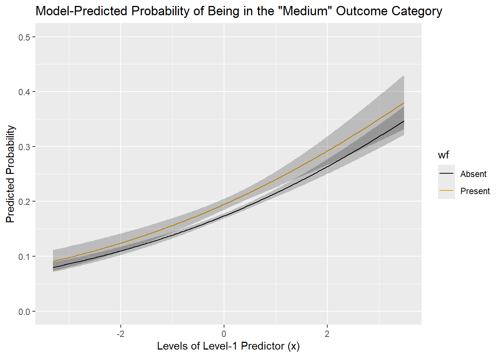

Robust Standard Errors for Clustered Data
Steve Brunwasser
2025-06-30
Workspace Prep
Clear the workspace and then load packages we may need.
rm(list=ls())
require(fungible)
require(rms)
require(Hmisc)
require(ggplot2)
require(data.table)
require(infer)
require(MASS)
require(lme4)
require(psychometric)
require(ordinal)
require(lmtest)
require(sandwich)
require(VGAM)
require(estimatr)Simulation Study
The purpose of this study is to evaluate the coverage rates for 95% confidence intervals (two-tailed \(\alpha=.05\)) when fitting linear regressions with robust “sandwich” estimators to clustered data where observations within clusters are non-independent but observations across clusters are independent.
Data-Generating Mechanism Equation
The simulated data set is developed based on a two-level mixed-effects model (equations below). The goal is to create a data set that roughly approximates LH’s data.
\[ y_{ij}=\beta_{0j}+\beta_{1j}X_{1ij}+e_{ij} \] \[ \beta_{0j}=\gamma_{00}+\gamma_{01}w+u_{0j} \] \[ \beta_{1j}=\gamma_{10}+u_{1j} \]
\[ \epsilon_{ij} \sim N(0,\sigma^2) \] \[ \begin{bmatrix} u_{0j} \cr u_{1j}\cr \end{bmatrix} \sim ~ N(\begin{bmatrix} 0 \cr 0 \cr \end{bmatrix} , \begin{bmatrix} \tau_{00} & \cr \tau_{10} & \tau_{11}\cr \end{bmatrix}) \]
Simulate the Population Data
- y: Continuous, Gaussian-distributed predictor
- x: Continuous predictor varying within and between clusters (level-1 predictor)
- w: Continuous predictor constant within clusters (level-2 predictor) (\(r_{x_1,x_2}=.10\))
- clusid: Identifies unique clusters which vary in size between 2 and 8
Create cluster ID variable with number of observations per cluster ranging from 2-8 with ~80% of clusters having 2-4 observations
set.seed(123)
cluster <- 100000
id <- factor(rep(1:cluster, sample(2:8, cluster, prob = c(.20, .40, .20, .10, .05, .03, .02), replace = TRUE)))Create the x matrix consistent of two “standardized” predictors (\(M=0, SD=1\)) allowing the two predictors to be correlated (\(r=.10\)). Below we can see the first 6 rows of the x matrix.
sig.x <- matrix(c(1.0, 0.1,
0.1, 1.0),
nrow=2)
mn.x <- c(0,0)
set.seed(456)
xmat <- mvrnorm(n=length(id),
mu=mn.x,
Sigma=sig.x)
head(xmat)## [,1] [,2]
## [1,] -0.5735665 -1.41919775
## [2,] 0.5966311 0.32561113
## [3,] 1.1464543 0.04143476
## [4,] 0.2353881 -2.29544845
## [5,] 0.7983590 -1.85792146
## [6,] -0.3013423 -0.17931796Transform the x matrix into a data.table and make the second predictor (w) into a level-2 predictor that is constant within clusters by replacing individual values with the cluster mean.
Simulate the variance parameters.
- e: Within-cluster error – \(M=0, SD=0.975\)
- u00: Random intercept effect – \(M=0, SD=0.75\)
- u01: Random slope for x (level-1) predictor effect – \(M=0, SD=0.35\)
set.seed(789)
dt[, e := rnorm(length(id), mean=0, sd=.975)]
dt[, int := 0]
set.seed(101112)
u00 <- rnorm(cluster, mean=0, sd=.75)
set.seed(131415)
u01 <- rnorm(cluster, mean=0, sd=.35)
reff <- data.table(clusid = factor(unique(id)), u00, u01)- Set the fixed-effects parameters
- Gather all simulated processes into a data.table (dt)
- Create continuous y outcome variable based on fixed & random effects and simulated predictor values
- Look at the first 20 rows of dt – can see that clusters have different numbers of observations and which variables vary within clusters (level-1; e.g., x) and which are constant within clusters (level-2; e.g., w)
dt <- merge(dt, reff, by = 'clusid')
dt[, b1 := 0.2]
dt[, b2 := 0.15]
dt[, y := (int+u00) + (b1*x+u01) + (b2*w) + e ]
dt[1:20]## Key: <clusid>
## clusid x w e int u00 u01 b1 b2 y
## <fctr> <num> <num> <num> <num> <num> <num> <num> <num> <num>
## 1: 1 -0.57356654 -0.3507173 0.51099429 0 -0.5691497 -0.1290604 0.2 0.15 -0.354536692
## 2: 1 0.59663105 -0.3507173 -2.20424869 0 -0.5691497 -0.1290604 0.2 0.15 -2.835740154
## 3: 1 1.14645434 -0.3507173 -0.01918773 0 -0.5691497 -0.1290604 0.2 0.15 -0.540714535
## 4: 2 0.23538809 -2.0766850 0.17856140 0 1.0151986 0.3698953 0.2 0.15 1.299230158
## 5: 2 0.79835901 -2.0766850 -0.35231769 0 1.0151986 0.3698953 0.2 0.15 0.880945251
## 6: 3 -0.30134226 0.7952887 -0.47237189 0 -0.1508028 0.3927092 0.2 0.15 -0.171440638
## 7: 3 0.04424577 0.7952887 -0.64965512 0 -0.1508028 0.3927092 0.2 0.15 -0.279606263
## 8: 3 -0.94178065 0.7952887 -0.17010755 0 -0.1508028 0.3927092 0.2 0.15 0.002736029
## 9: 3 0.42721876 0.7952887 -0.98568568 0 -0.1508028 0.3927092 0.2 0.15 -0.539042218
## 10: 4 1.25698276 0.5782601 0.72120366 0 -0.3301558 -0.3453259 0.2 0.15 0.383857443
## 11: 4 -1.07276544 0.5782601 -0.39223890 0 -0.3301558 -0.3453259 0.2 0.15 -1.195534750
## 12: 4 1.37587995 0.5782601 -0.97771082 0 -0.3301558 -0.3453259 0.2 0.15 -1.291277590
## 13: 4 -0.17322520 0.5782601 -0.17327623 0 -0.3301558 -0.3453259 0.2 0.15 -0.796664030
## 14: 4 1.07806816 0.5782601 -0.47570207 0 -0.3301558 -0.3453259 0.2 0.15 -0.848831206
## 15: 5 -1.18769440 1.0820545 0.90470971 0 0.9730025 -0.4427058 0.2 0.15 1.359775641
## 16: 5 1.76136364 1.0820545 -0.75506459 0 0.9730025 -0.4427058 0.2 0.15 0.289812949
## 17: 5 -0.57422632 1.0820545 0.41229935 0 0.9730025 -0.4427058 0.2 0.15 0.990058898
## 18: 5 0.85133481 1.0820545 -0.59178930 0 0.9730025 -0.4427058 0.2 0.15 0.271082472
## 19: 5 1.30979188 1.0820545 0.20414060 0 0.9730025 -0.4427058 0.2 0.15 1.158703794
## 20: 5 0.91234981 1.0820545 -0.75790376 0 0.9730025 -0.4427058 0.2 0.15 0.117171017
## clusid x w e int u00 u01 b1 b2 yMake count and ordinal version of the y outcome variable reflecting the low rate of outcome occurrence in LH’s data. Summarize the variables to be used in analyses.
# Create a count outcome mimicking distribution in LH's data
dt[, y.cnt := cut(y,
breaks = c(quantile(y, 0),
quantile(y, 0.9),
quantile(y, 0.925),
quantile(y, 0.95),
quantile(y, 0.975),
quantile(y, 1)),
labels=F)]
# Create 3-level ordinal outcome
dt[, y.ord := ordered(cut(y,
breaks = c(quantile(y, 0),
quantile(y, 0.8),
quantile(y, .9),
quantile(y, .975)),
labels=F), levels = 1:3, labels=c('Low','Medium','High'))]
dt <- upData(dt, labels=c(x='Continuous Within-Cluster Varying Predictor',
w='Continuous Cluster-Level Predictor',
y='Continous Outcome',
y.cnt='Count Version of Outcome',
y.ord='3-Level Ordinal Version of Outcome'))## Input object size: 36382040 bytes; 12 variables 356875 observations
## New object size: 34957096 bytes; 12 variables 356875 observations6 Variables 356875 Observations
clusid
| n | missing | distinct |
|---|---|---|
| 356875 | 0 | 1e+05 |
x: Continuous Within-Cluster Varying Predictor

n missing distinct Info Mean pMedian Gmd .05
356875 0 356875 1 0.001759 0.001905 1.131 -1.649481
.10 .25 .50 .75 .90 .95
-1.283267 -0.674684 0.001626 0.677430 1.287581 1.649569
lowest : -4.81563 -4.67164 -4.32624 -4.28466 -4.26182 , highest: 4.30253 4.39012 4.51486 4.7087 4.86529
w: Continuous Cluster-Level Predictor

n missing distinct Info Mean pMedian Gmd .05
356875 0 1e+05 1 0.0009213 0.001166 0.5948 -0.871045
.10 .25 .50 .75 .90 .95
-0.666636 -0.344071 0.001945 0.345852 0.668221 0.867984
lowest : -2.77226 -2.6704 -2.57786 -2.56818 -2.5099 , highest: 2.52237 2.5772 2.58769 2.75934 3.03463
y: Continous Outcome

n missing distinct Info Mean pMedian Gmd
356875 0 356875 1 0.001052 0.001068 1.465
.05 .10 .25 .50 .75 .90 .95
-2.132e+00 -1.663e+00 -8.725e-01 1.264e-05 8.783e-01 1.662e+00 2.134e+00
lowest : -5.97798 -5.86575 -5.63449 -5.52584 -5.52245 , highest: 5.46089 5.4723 5.52201 5.55915 5.63046
y.ord: 3-Level Ordinal Version of Outcome

| n | missing | distinct |
|---|---|---|
| 347952 | 8923 | 3 |
Value Low Medium High Frequency 285499 35687 26766 Proportion 0.821 0.103 0.077
y.cnt: Count Version of Outcome

| n | missing | distinct | Info | Mean | pMedian | Gmd |
|---|---|---|---|---|---|---|
| 356874 | 1 | 5 | 0.271 | 1.25 | 1 | 0.4625 |
Value 1 2 3 4 5 Frequency 321186 8922 8922 8922 8922 Proportion 0.900 0.025 0.025 0.025 0.025For the frequency table, variable is rounded to the nearest 0
Look at between- & within-cluster variability in \(y\) in a random sample of \(k=15\) clusters in the population data
set.seed(1)
boxplot <- ggplot(dt[sample(clusid, 15)], aes(y, clusid)) +
geom_boxplot() +
labs(y='15 Randomly Selected Clusters'
,x='Continuous y Levels'
)
boxplotGet population level parameters for effects of x and w
dd <- datadist(dt)
options(datadist=dd)
#pop.lin <- ols(y ~ x + w, data = dt)
#save(pop.lin, file='pop.lin')
load('pop.lin')
b1lin <- coef(pop.lin)[2]
b1lin## x
## 0.2005706## w
## 0.1643755Sample Clusters
Create a list of \(s=1,000\) data.tables each sampling \(n=9,108\) clusters from the populations data.table. We will then run regression models across all 1,000 samples.
nsamp <- 1000
nclus <- 9108
clussampler <- function(data, clusid, nclus, nsamp){
dtsamp <- data[sample(unique(clusid), nclus), .SD ]
}
#
# set.seed(131416)
# samplelist <- list()
# for(i in 1:nsamp){
# sampled <- clussampler(dt, clusid, nclus, nsamp)
# samplelist[[i]] <- sampled
# }
# save(samplelist, file='samplelist.RData')
load('samplelist.RData')Run Linear Models
- Use for() loop to run simple linear regression model not accounting for dependence due to clustering across the 1,000 samples of n=9,108 clusters created in the prior step
- Repeat this process using the lm_robust() function from the estimatr package to obtain robust standard errors – used lm_robust() because it allows for highly concise code for robust SEs
- Look at the converage rate for 95% CIs using standard regression and robust regression
- Using standard regression, coverage rate is poor for the level-2 predictor (w) effect but fine for the level-1 predictor (x) effect
- Using robust regression, coverage rate is good for all parameter estimates
set.seed(131417)
linout <- list()
for(i in 1:nsamp){
out <- lm(y ~ x + w, data = samplelist[[i]])
outdt <- data.table(confint(out))
linout[[i]] <- outdt
}
linest = do.call(rbind, linout)
linest$par <- factor(rep(c('int','b1','b2'), nsamp))
setnames(linest, old = names(linest), new = c('lci','uci','par'))
linest[, b1 := b1lin]
linest[, b2 := b2lin]
linest[par=='b1', cover := factor(between(b1, lci, uci, incbounds = T))]
linest[par=='b2', cover := factor(between(b2, lci, uci, incbounds = T))]
linest <- linest[par!='int',]
set.seed(131418)
linrobout <- list()
for(i in 1:nsamp){
out <- lm_robust(y ~ x + w, data = samplelist[[i]], se_type = "stata", clusters = clusid)
outdt <- data.table(confint(out))
linrobout[[i]] <- outdt
}
linrobest = do.call(rbind, linrobout)
linrobest$par <- factor(rep(c('int','b1','b2'), nsamp))
setnames(linrobest, old = names(linrobest), new = c('lci','uci','par'))
linrobest[, b1 := b1lin]
linrobest[, b2 := b2lin]
linrobest[par=='b1', cover := factor(between(b1, lci, uci, incbounds = T))]
linrobest[par=='b2', cover := factor(between(b2, lci, uci, incbounds = T))]
linrobest <- linrobest[par!='int',]
linestboth <- rbind(linest, linrobest)
linestboth$model <- factor(rep(c('Standard','Robust'), each=2000))
label(linestboth$cover) <- 'Does CI cover true parameter?'
label(linestboth$model) <- 'Model SE estimation type'
label(linestboth$par) <- 'Parameter'
html(summaryM(cover ~ par+model, data=linestboth))| Descriptive Statistics (N=2000). | ||
| b1 N=1000 |
b2 N=1000 |
|
|---|---|---|
| Robust | ||
| Does CI cover true parameter? | 0.96 (960) | 0.96 (965) |
| Standard | ||
| Does CI cover true parameter? | 0.96 (961) | 0.86 (859) |
| Numbers after proportions are frequencies. | ||
save(linest, file='linest.RData')
save(linest, file='linrobest.RData')
load('linest.RData')
load('linrobest.RData')
Clustered Ordinal Logistic Example
Below is an example of how to conduct ordinal logistic regression using a data set that approximates LH’s real data.
Data Prep
- Select just the first data.table from samplelist used in the simulation study above to conduct the analyses (\(c=9,108\) clusters & \(N=32,428\) observations)
- Make a unbalanced binary version of the level-2 predictor (w) treated as a factor (wf) with levels: 0=absent, 1=present with 80% of responses assigned to the reference category (“Absent”)
dt1 <- samplelist[[1]]
dt1[, wf := factor(ifelse(w > quantile(w, 0.8), 1, 0), levels=0:1, labels=c('Absent','Present'))]
Ordinal Logistic Regression
Fit a proportional odds logistic regression models using the polr() function from the MASS package and then using the lrm() function in the rms package. We’ll compare results of the two.
polr() function
- Fit ordinal logistic regression assuming proportional odds ignoring clustering
- Confidence intervals are calculated using profile likelihood method
ord1 <- polr(factor(y.ord) ~ x*wf, data = dt1, Hess = TRUE)
ord1.or <- data.table(exp(coef(ord1)))
ord1ci <- data.table(exp(confint(ord1)))
data.table(Predictor=c('x','wf','x:wf'), "Odds Ratio"=ord1.or, ord1ci)## Predictor Odds Ratio.V1 2.5 % 97.5 %
## <char> <num> <num> <num>
## 1: x 1.305339 1.2632215 1.348965
## 2: wf 1.150885 1.0711637 1.235702
## 3: x:wf 1.000842 0.9329014 1.073950- Refit the model accounting for non-independence due to clustering within families using the coeftest() function from lmtest package in conjunction with the sandwich package functions vcovCL()
- Confidence intervals are mildly wider when using robust standard errors, particularly for the wf level-2 predictor
ord1coef.rob <- coeftest(ord1, vcov=vcovCL(ord1, factor(dt1$clusid) ))
ord1or.rob <- exp(ord1coef.rob)
ord1or.rob.ci <- exp(confint(ord1coef.rob))
data.table(Predictor=c('x','wf','x:wf'), "Odds Ratio"= ord1or.rob[,1], ord1or.rob.ci)## Predictor Odds Ratio 2.5 % 97.5 %
## <char> <num> <num> <num>
## 1: x 1.305339 1.2627791 1.349333
## 2: wf 1.150885 1.0535423 1.257221
## 3: x:wf 1.000842 0.9329079 1.073723lrm() function
Fitting with the lrm() function is beneficial as we can take advantage of the many features of the rms package, especially the impactPO function to evaluate the consequences of violation of the proportional odds assumption.
- Set the data distribution to allow for use of helpful rms functions
- Will be helpful later for plotting and testing proportional odds assumption
- Fit the same proportional odds regression model previously fit with the polr() function
- Obtain robust standard errors using the robcov() function after fitting the model
- Odds ratio confidence intervals are same to several decimal places as those obtained with polr() in conjunction with the sandwich package
lrm1 <- lrm(y.ord ~ x*wf, data = dt1, x=T, y=T)
lrm1rob <- robcov(lrm1, cluster=dt1$clusid)
summary(lrm1rob, x=c(0,1))## Effects Response : y.ord
##
## Factor Low High Diff. Effect S.E. Lower 0.95 Upper 0.95
## x 0 1 1 0.26646 0.016911 0.233320 0.29961
## Odds Ratio 0 1 1 1.30530 NA 1.262800 1.34930
## wf - Present:Absent 1 2 NA 0.14053 0.045076 0.052185 0.22888
## Odds Ratio 1 2 NA 1.15090 NA 1.053600 1.25720
##
## Adjusted to: x=0.001257004 wf=AbsentPlot the conditional odds ratios for the two predictors
- Plot the model-predicted probabilities of being in higher levels of the ordinal outcome
- Prediction across all values of x by levels of wf
ggplot(Predict(lrm1, x, wf, kint = 1, fun = plogis)) +
labs(x='Levels of Level-1 Predictor (x)',
y='Predicted Probability',
title='Model-Predicted Probability of Being in the "Medium" Outcome Category')
ggplot(Predict(lrm1, x, wf, kint = 2, fun = plogis)) +
labs(x='Levels of Level-1 Predictor (x)',
y='Predicted Probability',
title='Model-Predicted Probability of Being in the "High" Outcome Category')
Evaluate Proportional Odds Assumption
In this section, we use
described by Harrell to evaluate the impact of potential proportional
odds (PO) assumption violations. This involves comparing the PO model to
a partial PO model (relax PO assumption for subset of predictors) and
multinomial logistic model (don’t assume PO for any predictors). As
described by Harrell, it is important to weight the potential benefits
of relaxing/eliminating the PO assumption against the drawbacks of added
model complexity, overfitting, & poor model performance in future
data sets.
- Create a new data frame to house predicted values based on our 3 types of logistic regression models: PO, partial PO, and multinomial
- Allow levels of both x and wf to vary, with predicted probabilities calculated at 1st (-0.668), 2nd (0.001), & 3rd quartiles (0.684) of x and both levels of wf (absent & present)
- Results in six predicted values across combinations of x and wf
- View the 6 combinations of predictor values
- Note, might make sense to use more values of x but just using 3 here for demonstration purposes
pred <- expand.grid(x=c(quantile(dt1$x, 0.25),
quantile(dt1$x, 0.5),
quantile(dt1$x, 0.75)),
wf=levels(dt1$wf))
pred## x wf
## 1 -0.667903374 Absent
## 2 0.001257004 Absent
## 3 0.683603344 Absent
## 4 -0.667903374 Present
## 5 0.001257004 Present
## 6 0.683603344 Present- Use the impactPO() function to calculate predicted probabilities for y.ord at various levels of predictors stored in the pred data frame from the prior step
- Relax PO assumption for wf predictor specifically
- Use 500 bootstrap samples to calculate percentile confidence intervals for difference in predicted values across the 3 different logistic models – sig differences would be indicative of violation of proportional odds assumption
# poimp <- impactPO(y.ord ~ x*wf, nonpo = ~ wf,
# data=dt1, newdata=pred, B=500)
# save(poimp, file='poimp.RData')
load('poimp.RData')
poimp## PO PPO Multinomial
## Deviance 37350.30 37348.10 37342.35
## d.f. 5 6 8
## AIC 37360.30 37360.10 37358.35
## p 3 4 6
## LR chi^2 349.71 351.92 357.67
## LR - p 346.71 347.92 351.67
## LR chi^2 test for PO 2.21 7.95
## d.f. 1 3
## Pr(>chi^2) 0.1374 0.0470
## MCS R2 0.011 0.011 0.011
## MCS R2 adj 0.011 0.011 0.011
## McFadden R2 0.009 0.009 0.009
## McFadden R2 adj 0.009 0.009 0.009
## Mean |difference| from PO 0.002 0.002
##
## Covariate combination-specific mean |difference| in predicted probabilities
##
## method x wf Mean |difference|
## 1 PPO -0.667903374 Absent 0.001
## 2 PPO 0.001257004 Absent 0.001
## 3 PPO 0.683603344 Absent 0.001
## 4 PPO -0.667903374 Present 0.002
## 5 PPO 0.001257004 Present 0.003
## 6 PPO 0.683603344 Present 0.003
## 11 Multinomial -0.667903374 Absent 0.002
## 21 Multinomial 0.001257004 Absent 0.001
## 31 Multinomial 0.683603344 Absent 0.001
## 41 Multinomial -0.667903374 Present 0.000
## 51 Multinomial 0.001257004 Present 0.002
## 61 Multinomial 0.683603344 Present 0.004
##
## Bootstrap 0.95 confidence intervals for differences in model predicted
## probabilities based on 500 bootstraps
##
##
## x wf
## 1 -0.6679034 Absent
##
## PO - PPO probability estimates
##
## Low Medium High
## Lower 0 -0.002 0.000
## Upper 0 0.000 0.002
##
## PO - Multinomial probability estimates
##
## Low Medium High
## Lower 0.000 -0.005 0.000
## Upper 0.001 0.000 0.005
##
## x wf
## 2 0.001257004 Absent
##
## PO - PPO probability estimates
##
## Low Medium High
## Lower 0 -0.002 0.000
## Upper 0 0.000 0.002
##
## PO - Multinomial probability estimates
##
## Low Medium High
## Lower 0 -0.002 0.000
## Upper 0 0.000 0.003
##
## x wf
## 3 0.6836033 Absent
##
## PO - PPO probability estimates
##
## Low Medium High
## Lower 0 -0.003 0.000
## Upper 0 0.000 0.002
##
## PO - Multinomial probability estimates
##
## Low Medium High
## Lower -0.001 -0.002 -0.002
## Upper 0.000 0.003 0.001
##
## x wf
## 4 -0.6679034 Present
##
## PO - PPO probability estimates
##
## Low Medium High
## Lower -0.001 -0.001 -0.006
## Upper 0.000 0.008 0.001
##
## PO - Multinomial probability estimates
##
## Low Medium High
## Lower -0.001 -0.005 -0.006
## Upper 0.001 0.007 0.005
##
## x wf
## 5 0.001257004 Present
##
## PO - PPO probability estimates
##
## Low Medium High
## Lower -0.002 -0.001 -0.007
## Upper 0.000 0.009 0.001
##
## PO - Multinomial probability estimates
##
## Low Medium High
## Lower -0.002 -0.002 -0.007
## Upper 0.000 0.008 0.002
##
## x wf
## 6 0.6836033 Present
##
## PO - PPO probability estimates
##
## Low Medium High
## Lower -0.002 -0.001 -0.008
## Upper 0.000 0.010 0.001
##
## PO - Multinomial probability estimates
##
## Low Medium High
## Lower -0.004 0.000 -0.01
## Upper 0.000 0.014 0.00- Mean differences across PO to partial PO and PO to multinomial are small
- A number of differences in predictions at specific combinations of
x and wf are statistically significant
- R^2 values across the three methods are indistinguishable
- Non-significant diff between PO and partial PO relaxing the PO assumption for wf
- Borderline significant improvement of multinomial model over PO (p=.047) – potential indication that PO assumption is less viable for effect of x than for wf
- AIC slightly favors partial PO and multinomial models
- Overall, seems like the benefits of partial PO model relaxing PO assumption for effect of wf is not worth the added complexity even though AIC is tiny bit better for partial PO (37360.10) compared to PO (37360.30) model
- As there was some indication that the multinomial model was best in the impactPO() analysis and the benefits of relaxing the PO assumption for wf were minuscule at best, rerun the impactPO() model comparing the PO model to a partial PO model relaxing the PO assumption only for the effect of x.
- No need to compare to the multinomial model again, so use the relax=‘ppo’ argument so that the function does not needlessly rerun the multinomial model
# poimp1 <- impactPO(y.ord ~ x*wf, nonpo = ~ x, relax = 'ppo',
# data=dt1, newdata=pred, B=500)
# save(poimp1, file='poimp1.RData')
load('poimp1.RData')
poimp1## PO PPO
## Deviance 37350.30 37344.72
## d.f. 5 6
## AIC 37360.30 37356.72
## p 3 4
## LR chi^2 349.71 355.30
## LR - p 346.71 351.30
## LR chi^2 test for PO 5.59
## d.f. 1
## Pr(>chi^2) 0.0181
## MCS R2 0.011 0.011
## MCS R2 adj 0.011 0.011
## McFadden R2 0.009 0.009
## McFadden R2 adj 0.009 0.009
## Mean |difference| from PO 0.001
##
## Covariate combination-specific mean |difference| in predicted probabilities
##
## method x wf Mean |difference|
## 1 PPO -0.667903374 Absent 0.001
## 2 PPO 0.001257004 Absent 0.000
## 3 PPO 0.683603344 Absent 0.001
## 4 PPO -0.667903374 Present 0.002
## 5 PPO 0.001257004 Present 0.000
## 6 PPO 0.683603344 Present 0.001
##
## Bootstrap 0.95 confidence intervals for differences in model predicted
## probabilities based on 500 bootstraps
##
##
## x wf
## 1 -0.6679034 Absent
##
## PO - PPO probability estimates
##
## Low Medium High
## Lower 0.000 -0.004 0.000
## Upper 0.001 0.000 0.003
##
## x wf
## 2 0.001257004 Absent
##
## PO - PPO probability estimates
##
## Low Medium High
## Lower 0 -0.001 0.000
## Upper 0 0.000 0.001
##
## x wf
## 3 0.6836033 Absent
##
## PO - PPO probability estimates
##
## Low Medium High
## Lower -0.001 0.000 -0.002
## Upper 0.000 0.003 0.000
##
## x wf
## 4 -0.6679034 Present
##
## PO - PPO probability estimates
##
## Low Medium High
## Lower 0.000 -0.005 0.000
## Upper 0.001 0.000 0.004
##
## x wf
## 5 0.001257004 Present
##
## PO - PPO probability estimates
##
## Low Medium High
## Lower 0 -0.001 0.000
## Upper 0 0.000 0.001
##
## x wf
## 6 0.6836033 Present
##
## PO - PPO probability estimates
##
## Low Medium High
## Lower -0.001 0.000 -0.002
## Upper 0.000 0.003 0.000- Partial PO model with no PO assumption for x effect is statistically significantly better than the PO model (for what that’s worth)
- AIC favors the partial PO model too
Partial PO Model
- Based on the results of the impactPO() analyses, fit a partial PO model assuming PO for the effect of wf but NOT for x
- As effect of x is modeled to interact with wf and we are allowing separate effects of x for crossing the two y.ord thresholds, also relax PO assumption for the interaction – i.e., allow effect of interaction be different for moving across threshold separating “low” and “medium” and threshold separating “medium” and “high”
- Note that there is only one effect estimate for wf because we assume that the effect of wf on moving across the first and second thresholds is the same (PO assumption)
- There are two effects for x and the \(x*wf\) interaction as we do NOT assume the effect is constant across thresholds of y.ord